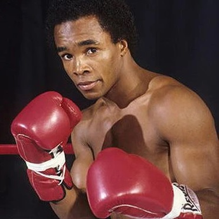

LEYENDAS DEL BOX
Conocé a aquellos peleadores que marcaron una época, rompieron récords o protagonizaron contiendas memorables.
Muhammad Ali
Nacido el 17 de Enero de 1942 en Louisville, Kentucky (EEUU), bajo el nombre de Cassius Marcellus Clay. Ganó el Oro Olímpico en Roma en 1960. En 1964, poco después de cumplir 22 años, le llegó su primera chance mundialista, cuando noqueó a Sonny Liston en 7 asaltos. Defendió el campeonato hasta que en 1967 fue baneado del boxeo por su negativa a ir a la guerra de Vietnam. Su casó llejo a la Justicia y en 1970 se le restituyó su licencia de boxeador, iniciando así la segunda etapa de su carrera. En 1974 recuperó el título mundial de los Pesados en una pelea legendaria tras noquear en 8 rounds al formidable George Foreman. Luego noquearía a Smokin' Joe Frazier en otra pelea memorable. En 1978, para sorpresa del mundo, perdería el título ante el novato Leon Spinks, pero lo recuperaría en Septiembre del mismo año. En 1979 anunció su retiro pero volvió para pelear dos veces más, ambas sendas derrotas para retirarse definitivamente. Falleció el 3 de junio del año 2016 a los 74 años de edad.
Floyd Mayweather Jr.

El oriundo de Grand Rapids, Michigan (EEUU), nació el 24 de Febrero de 1977. Medallista olímpico de bronce en Atlanta 1996, entrenado por su padre Floyd y su tío Roger (ambos ex-boxeadores) hizo su salto al profesionalismo en Octubre del mismo año. Obtuvo rápidamente el apodo de "Pretty Boy", y ganó su primer título mundial a los 21 años en el peso Super Pluma (58,967 kg.). Fue escalando en las divisiones siendo campeón en los pesos Ligero (61,237), Superligero (63,503), Welter (66,678 kg) y Superwelter. Su ascendente carrera en los pesos, fue a la par con un crecimiento económico en sus bolsas sin precedentes, al punto que ganó el apodo de "Money" (Dinero), y amasó en sus 50 combates profesionales (todas victorias) y exhibiciones (combates no oficiales), la friolera suma de 1000 millones de dólares.
Sugar Ray Leonard
Nacido en Carolina del Norte (EEUU). Ray Leonard lograría una impresionante carrera amateur ganando 145 de sus 150 combates y haciéndose del Oro en las Olimpiadas de Montreal 1976. Años después, ya con el apodo de "Sugar", haría el salto al profesionalismo. Logrando el título mundial en 5 categorías diferentes (Welter, Superwelter, Mediano, Supermediano y Semipesado), alcanzaría un récord de 36 triunfos, 3 derrotas y 1 empate. Anunció su retiro en el año 1997 tras más de 20 años de carrera.
Manny Pacquiao
Emmanuel Dapidran Pacquiao, mejor conocido como Manny Pacquiao,nació en Filipinas el 17 de diciembre de 1978. Dueño de una carrera brillante, es el único boxeador en la historia en consagrarse campeón en 8 categorías diferentes. (Mosca, Supergallo, Pluma, Suplepluma, Ligero, Superligero, Welter y Superwelter). Dueño de un récord de 62-8-2 (39 KO), se retiró del boxeo en 2021 para dedicarse a la política de su Filipinas natal donde es Senador desde el año 2016. En septiembre de 2021 anunció su candidatura a Presidente para las elecciones de 2022.